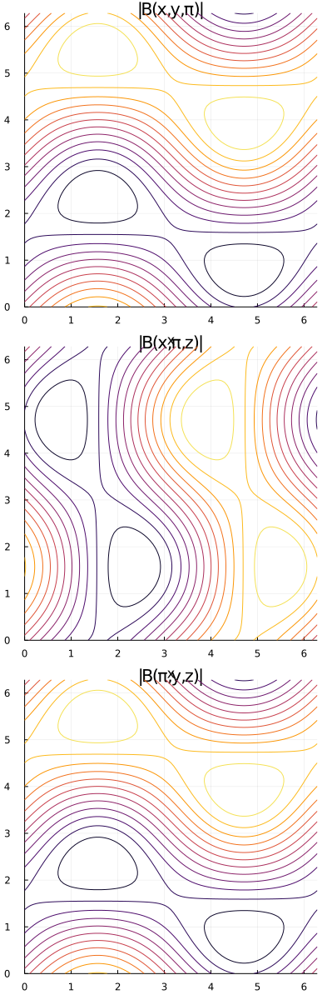
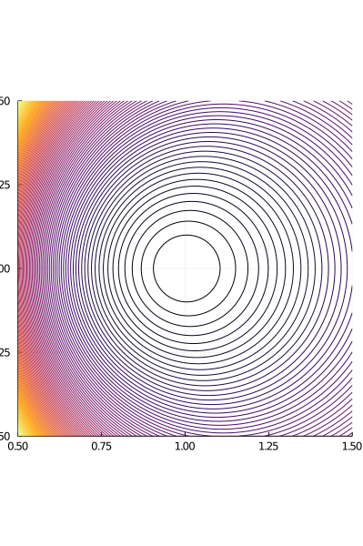
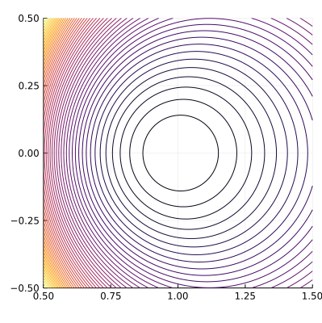

Analytic Fields
Arnold-Beltrami-Childress (ABC) Field
ElectromagneticFields.ABC — ModuleArnold-Beltrami-Childress (ABC) field in (x,y,z) coordinates with covariant components of the vector potential given by
resulting in the magnetic field $B(x,y,z) = A(x,y,z)$.
Parameters: a, b, c
Absolut value of the magnetic field:

Axisymmetric Tokamak Equilibrium in Cartesian Coordinates
ElectromagneticFields.AxisymmetricTokamakCartesian — ModuleAxisymmetric tokamak equilibrium in (x,y,z) coordinates with covariant components of the vector potential given by
resulting in the magnetic field with covariant components
where $R = \sqrt{ x^2 + y^2 }$ and $r = \sqrt{ (R - R_0)^2 + z^2 }$.
Parameters:
R₀: position of magnetic axisB₀: B-field at magnetic axisq₀: safety factor at magnetic axis
Vector potential in y direction:

Axisymmetric Tokamak Equilibrium in Cylindrical Coordinates
ElectromagneticFields.AxisymmetricTokamakCylindrical — ModuleAxisymmetric tokamak equilibrium in (R,Z,ϕ) coordinates with covariant components of the vector potential given by
resulting in the magnetic field with covariant components
where $r = \sqrt{ (R - R_0)^2 + Z^2 }$.
Parameters:
R₀: position of magnetic axisB₀: B-field at magnetic axisq₀: safety factor at magnetic axis
Vector potential in y direction:

Axisymmetric Tokamak Equilibrium in Toroidal Coordinates
ElectromagneticFields.AxisymmetricTokamakToroidal — ModuleAxisymmetric tokamak equilibrium in (r,θ,ϕ) coordinates with covariant components of the vector potential given by
resulting in the magnetic field with covariant components
where $R = R_0 + r \cos \theta$.
Parameters:
R₀: position of magnetic axisB₀: B-field at magnetic axisq₀: safety factor at magnetic axis
Vector potential in y direction:
